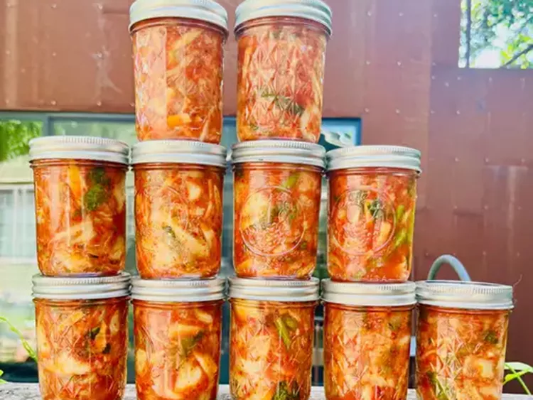
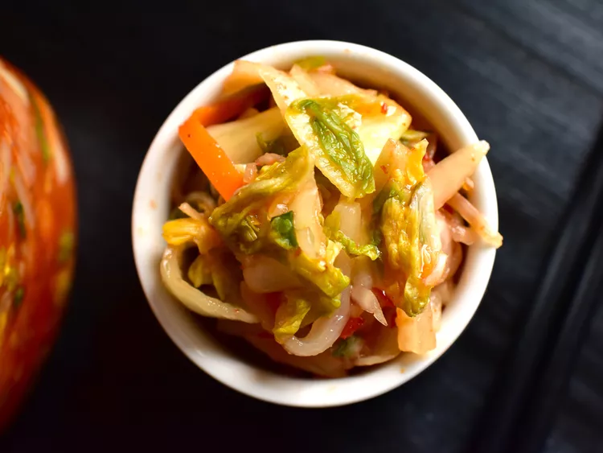

Что такое кимчи?
Кимчи — это традиционное корейское блюдо, приготовленное из ферментированных овощей. Ингредиенты могут различаться, но распространёнными основами являются капуста напа и корейская редька. Кимчи также часто включает зелёный лук, имбирь и чеснок.
Какой вкус у кимчи?
Вкус и интенсивность кимчи могут варьироваться в зависимости от используемых ингредиентов, но это должно быть сочетание кислого, солёного и острого...

Из чего состоит кимчи?
Этот рецепт начинается с двух головок капусты напа. Натирание капусты крупной морской солью выводит излишки влаги, продлевает срок хранения и добавляет вкус. Также понадобится рыбный соус, зелёный лук, белый лук, чеснок, белый сахар, молотый имбирь и гочугару.
Что делать с кимчи
Изучите нашу коллекцию рецептов с кимчи для вкусного вдохновения. Вот несколько самых популярных идей, которые вы найдёте:
Кимчи Удон Стир-Фрай с лапшой Жаренный рис с кимчи Кимчи Джун (кимчи панкейк) и соус для маканияКак долго действует кимчи?
Перед подачей кимчи поставьте в холодильник. Храните кимчи, плотно запечатанное, в герметичной емкости в холодильнике до месяца.
Состав
- 2 головы капусты напа
- 1 1/4 стакана крупной морской соли
- 5 столовых ложек гочугару (порошок корейского чили)
- 5 зелёных луковиц, нарезанных
- ½ Маленький белый лук, измельчённый
- 2 столовые ложки белого сахара
- 1 столовая ложка рыбного соуса
- 2 зубчика чеснока, измельчённые
- 1 чайная ложка молотого имбиря
Инструкции
Шаг 1
Разрежьте капусту вдоль пополам; Обрезка концов. Полоскать; Нарезать на кусочки примерно 2 дюйма в квадратах. Положите капусту в большие закрывающиеся пакеты; Равномерно посыпьте солью листья для покрытия. Втирайте капусту солью руками. Выжмите лишний воздух, запечатайте пакеты и оставьте при комнатной температуре на 6 часов.
Шаг 2
Промывайте капустные листья холодной водой не менее 2–3 раза, чтобы удалить большую часть соли; Сливайте и выжимайте лишнюю жидкость.
Шаг 3
Поместите промытую капусту в большой контейнер с плотно прилегающей крышкой; Добавьте зелёный лук, белый лук, сахар, рыбный соус, чеснок и имбирь. Посыпьте смесь порошком корейского чили; Втирайте листья капусты до равномерного покрытия, надевая пластиковые перчатки для защиты рук.
Шаг 4
Запечатайте контейнер; Поставить в прохладное сухое место. Оставьте без помех 4 дня. Поставьте в холодильник перед подачей. Храните в холодильнике до месяца (если хранится так долго!).

Советы по рецепту
Найдите рыбный соус из кимчи и порошок корейского чили на азиатских рынках или онлайн.